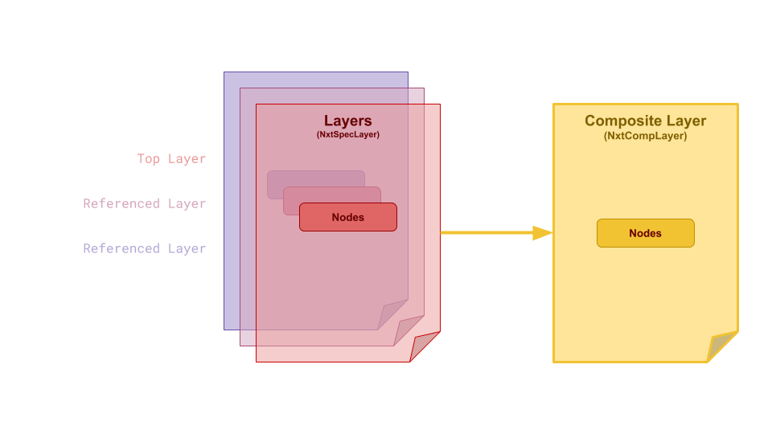
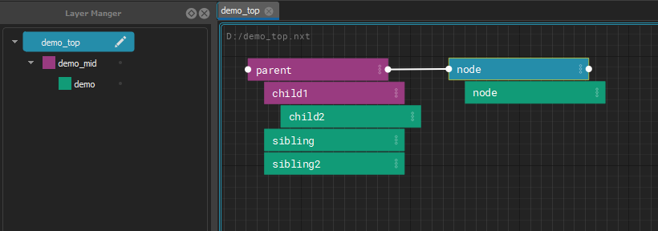
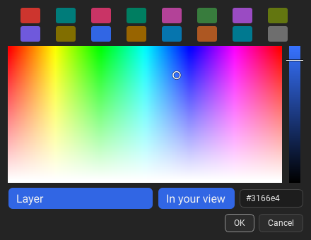
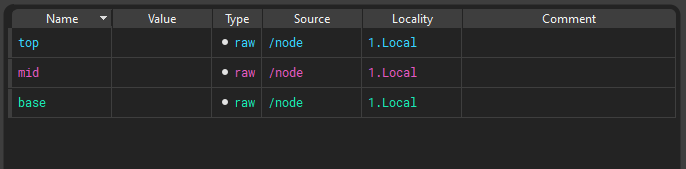
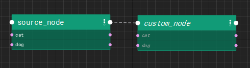
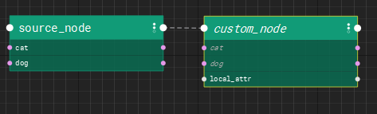
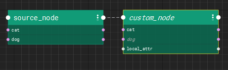
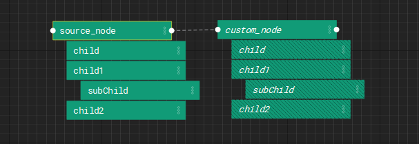
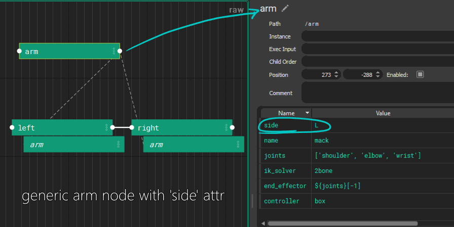

Layers and References
A graph is composed (combined) from layers. Each layer holds its own opinions about nodes, and the layers stack, so a stronger layer can change a node from a weaker one without touching that layer's file. Layers pull other layers in through references. Inside a layer, nodes also inherit from their parents and from the nodes they instance.
For editing references in the editor, see the Reference Editor and Reload Source.
Layers
Layers are designed to be composited (combined) to create a hierarchy of instructions that can be reused and repurposed by several NXT users for use on several assets or workflows. Multiple layers can be referenced and nxt seamlessly combines them into a single composite layer.


All of the layers in your file are composited together to produce final code to execute. Each layer has the power to change as much or as little as is needed to customize the composited node’s attributes and code block. These changes are stored in the file they are made on, keeping referenced files safe to use for many purposes.
Layer color propagates into nodes an also attributes.
A layer can be any color. Change Color picks from the full spectrum: the layer palette, a field of every hue and saturation, a shade bar from black to the hue at its brightest, and a hex field. The layer is given exactly the color picked, and by default every color is shown exactly as it is. How layer colors are shown is your own view, see Layer Color View. In your view in Change Color shows how the color you are choosing will look to you.


References
A layer pulls other layers in through its references. They are stored in the layer's file as a list:
"references": [
"base_steps.nxt",
"$PROJECT_ROOT/lib/shared_steps.nxt"
]
References are a stack: the first one in the list is the strongest of them, directly below the layer that references it, and each one after it is weaker. A referenced layer can have references of its own.
Edit them with the Reference Editor (right click a layer in the Layer Manager > Edit References...), or add one with Reference Layer Above/Below and Reference Builtin Graph from the File menu. To pick up changes somebody else saved to any of these files, use Reload Source.
How references are found
A reference is stored exactly as it was written, which is often only part of
a path. Environment variables ($NAME) and ~ in it are expanded first.
Then:
- An absolute path is used as it is.
- Anything else is looked for under each folder listed in the
NXT_FILE_ROOTSenvironment variable, in order. Separate the folders with;on Windows and:on Linux and macOS. - If no root has it, it is looked for relative to the folder of the layer that holds the reference. That is the layer's own folder, not the folder of the top graph and not wherever the editor was started.
The first file found is used. The same order is used when a graph is opened, when a reference is added in the editor, when a layer is reloaded with Reload Source, and by the Reference Editor's resolved view, so they always agree.
For example, with NXT_FILE_ROOTS=/projects/show_a;/projects/library, the
reference lib/shared_steps.nxt is found at
/projects/show_a/lib/shared_steps.nxt if it exists there, otherwise at
/projects/library/lib/shared_steps.nxt, and otherwise at
lib/shared_steps.nxt in the referring layer's folder. Because what is
stored is the partial path, the same graph keeps working on another
machine, or for another project, with different roots.
A root wins over a file beside the layer
Because the roots are tried first, a file under a root is used even when
a file of the same name sits next to the layer. This is deliberate: put
a folder holding your working copies first in NXT_FILE_ROOTS, and a
graph that references rig_steps.nxt picks up your working copy of
rig_steps.nxt instead of the published one beside it, without
changing the graph. Take the folder out of NXT_FILE_ROOTS to go back.
To always use one particular file, reference it by an absolute path, or
by a path built from an environment variable.
The Reference Editor shows where each reference resolves on this machine with its resolved toggle, and the tooltip on a row says where nxt looked.
References that cannot be found are kept
If a referenced file cannot be found, for example because it lives on a share this machine cannot see, the graph still opens without that layer, and the failure is logged. The reference itself is kept on the layer exactly as written, so saving the layer does not remove it. The Reference Editor draws such references in red.
Composition Inside Node Hierarchies
When a node is a child of another node, it inherits its attributes from that node which can be overwritten locally on the node.
Instancing
Instancing allows you to reuse nodes from other parts of the graph with specific overrides.
Instances in NXT can be simple and powerful. But they can also be extremely complicated with mind-bending edge cases. In simple terms, you can think about an instance as a clone of another node. It's like a live copy. But it's a bit more nuanced to think about an instance like an additional parent that's outside the hierarchy.
Example
- If you create a node, don't add any attributes or code, it will just look like a clone of the instance source.

- If you create a node with unique attributes it will look like the instance source is another parent. All the attributes will composite from the instance source, and the local attributes will be visible as well.

- If you create a node with attributes named the same as the instance source, the local attributes will have a stronger opinion and overwrite the instance values. In this case,cat exists on custom_node so it's value wins.

The children of the instance node get inserted into the hierarchy as proxy children. This data exists only as a result of the composite. The are not local saved data. Proxy children are drawn in a hashed style to make it clear you haven't touched the data.

As soon as you begin to edit proxy children, they are converted into real editable nodes and exist in the hierarchy.
Note
The hierarchy has the final opinion in the composite. UNLESS the node has an local opinion on the data.
- Layer
- Node parent
- Node
- Instance parent
- Instance
Example
Build a base arm. Instance it twice. Change L to R, done.

An instance of a node inherits data like a child. It creates proxy children of the instance source’s children, and can be arranged into a separate parent-child relationship as it’s instance source.
Most instance attributes are carried over. Execution input is never inherited. Child order is inherited by instances but not by children.
Data comes from the hierarchical parent as well as the instance source, with hierarchical parent having final word. Instance execution order is defined by the hierarchical parent.
Danger
If a node instances itself, or any ancestor or descendants, it will crash. It's best (because that's all thats possible) to only instance from other hierarchies or sibling nodes